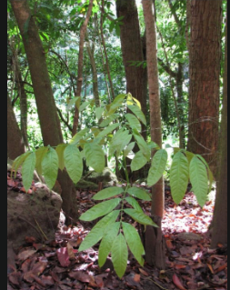

Info Tanaman Banyumanik

Mahoni
Kingdom: Plantae
Divisi: Tracheophyta
Class: Magnoliopsida
Ordo: Sapindales
Famili: Meliaceae
Genus: Swietenia
Spesies: Swietenia macrophylla
🌱 Budidaya
- Lingkungan: Tumbuh baik di tanah lempung berpasir dan daerah dengan curah hujan 1.000–2.000 mm/tahun.
- Penanaman: Jarak tanam sekitar 3x3 meter hingga 5x5 meter, tergantung kondisi lahan.
- Perawatan: Pemangkasan cabang secara berkala dan pengendalian hama seperti penggerek batang diperlukan untuk menjaga kualitas kayu.
💡 Fun Fact
"Penjaga Jalan Sejak Zaman Belanda" — Mahoni kerap ditanam di pinggir jalan sejak era kolonial. Tak hanya menjadi peneduh, mahoni juga dikenal mampu menyerap polusi udara, menjadikannya penjaga lingkungan yang sering luput dari perhatian.
🃠Manfaat
- Kulit dan biji mahoni mengandung senyawa flavonoid yang bermanfaat sebagai antioksidan.
- Kayu mahoni dimanfaatkan secara luas untuk pembuatan furnitur berkualitas tinggi.
- Pohon mahoni juga ditanam sebagai peneduh dan pelindung dari erosi di tepi jalan dan lahan miring.